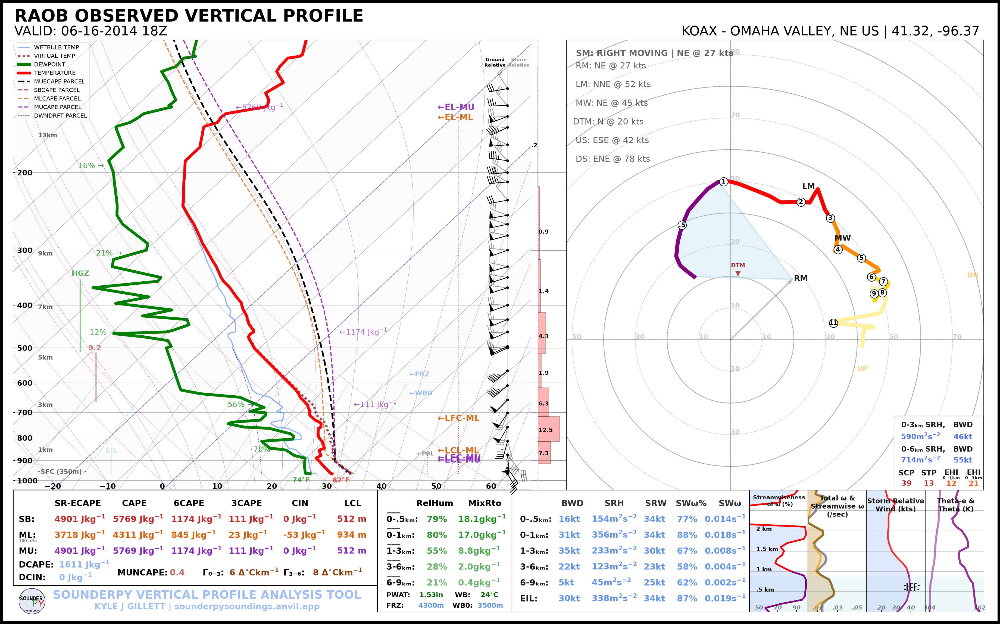
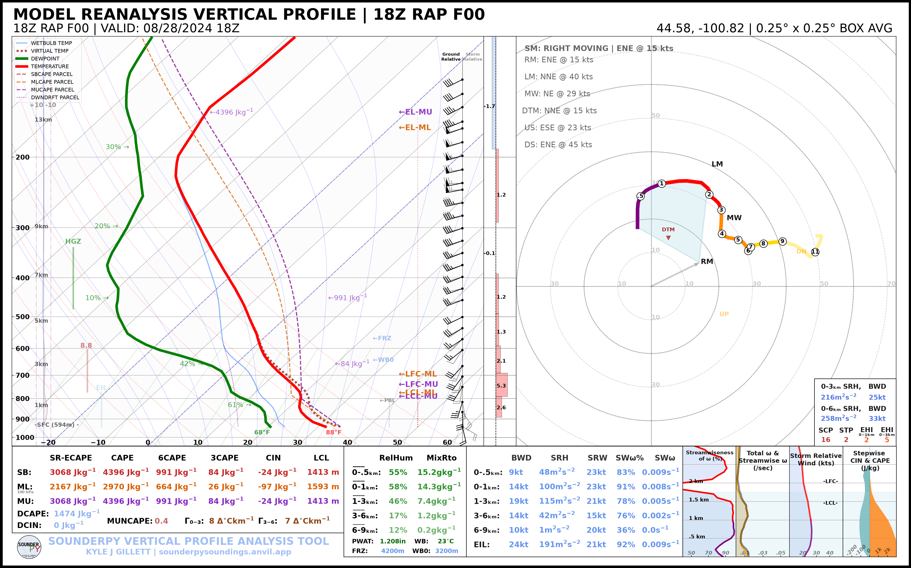
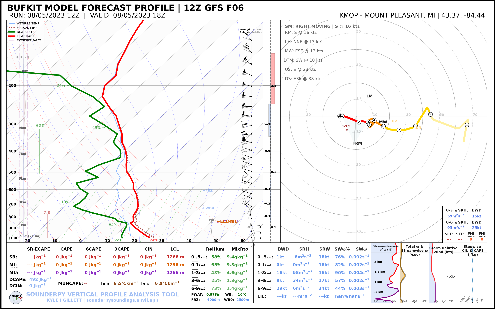
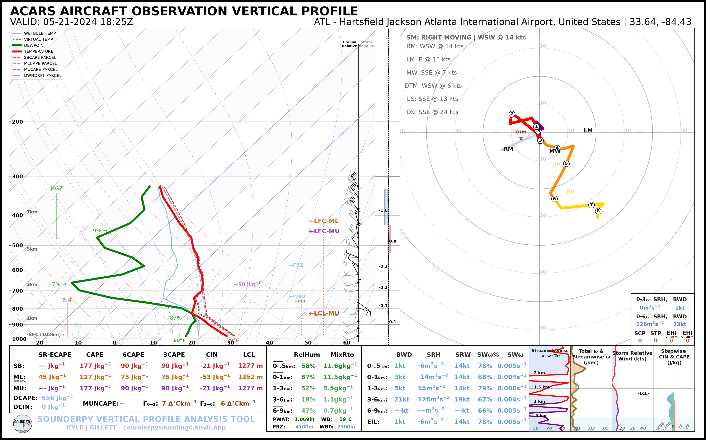

📊 Plot Gallery
SounderPy can create sounding, hodograph, composite, and VAD-based visualizations from observed, forecast, reanalysis, model-output, and custom vertical profile data.
Most comparison examples use the same observed OAX sounding from 16 June 2014 at 18 UTC so that visual differences reflect plotting options rather than differences in the atmospheric profile.
Jump to: Themes | Accessibility | Maps and Radar | Parcels | Hodograph Options | Data Sources | Composite Soundings
Light and Dark Themes
The same SounderPy profile can be rendered using either the default light appearance or the dark-background plotting style.

Light-Mode Sounding Default SounderPy appearance. spy.build_sounding(
data,
dark_mode=False,
)
|

Dark-Mode Sounding Enable the dark-mode with: spy.build_sounding(
data,
dark_mode=True,
)
|

Light-Mode Hodograph spy.build_hodograph(
data,
dark_mode=False,
)
|

Dark-Mode Hodograph spy.build_hodograph(
data,
dark_mode=True,
)
|
Color-Deficiency-Friendly Settings
SounderPy includes a color-deficiency-friendly option for sounding plots. This simply changes the dewpoint trace from green to blue.

Standard Colors spy.build_sounding(
data,
color_blind=False,
)
|

Color-Deficiency-Friendly spy.build_sounding(
data,
color_blind=True,
)
|
Map and Radar Settings
The SounderPy map inset can be disabled, displayed without radar, or combined with supported radar data.

Map Disabled Set spy.build_sounding(
data,
radar=None,
map_zoom=0,
)
|

Map Only Display the map while disabling radar. spy.build_sounding(
data,
radar=None,
map_zoom=2,
)
|

Single-Site Radar Use WSR-88D data from the nearest radar site. spy.build_sounding(
data,
radar="single",
radar_time="sounding",
map_zoom=2,
)
|

Radar Mosaic Use recent CONUS mosaic reflectivity data. spy.build_sounding(
data,
radar="mosaic",
radar_time="sounding",
map_zoom=2,
)
|
Map Zoom
The map extent can also be changed with map_zoom. A larger integer will zoom out (including more of the map).

spy.build_sounding(
data,
radar=None,
map_zoom=4,
)
Parcel Settings
SounderPy supports default parcel behavior, a simplified parcel configuration, and custom parcel highlighting/background combinations.

Default Parcels Use SounderPy’s standard parcel configuration. spy.build_sounding(
data,
special_parcels=None,
)
|

Simple Parcels Use the simplified parcel configuration. spy.build_sounding(
data,
special_parcels="simple",
)
|
Custom Parcel Configuration
Custom parcel settings allow selected parcel types to be highlighted while others are displayed in the background.

For example:
custom_parcels = [
["sb_ia_ecape"],
["sb_ps_ecape", "sb_ps_cape"],
]
spy.build_sounding(
data,
special_parcels=custom_parcels,
)
Additional Plot Options
Theta and Theta-e
If you’d like to maintain the classic low-level theta and theta-e profiles, you may do so by using show_theta=True:
{kind=link}

spy.build_sounding(data, show_theta=True)
Ground-Relative vs Storm-Relative Hodographs
You may translate hodograph data to a storm-relative reference frame with sr_hodo=True. This may be done for hodograph and sounding plots.

Ground Relative spy.build_hodograph(
data,
sr_hodo=False,
)
|

Storm Relative spy.build_hodograph(
data,
sr_hodo=True,
)
|
Custom Storm Motion
You can set a custom storm motion using storm_motion = [direction, speed]. This may be done for hodograph and sounding plots.

spy.build_hodograph(data, storm_motion=[250.0, 45.0])
Hodograph Boundary
Here you can add a line to the hodograph plot to visualize the orientation of the flow relative to a nearby boundary (such as a cold front, outflow boundary, etc). This may be done for hodograph and sounding plots.

spy.build_hodograph(data, hodo_boundary={"angle": [45], "color": ["tab:purple"]})
Different Data Sources
One of SounderPy’s core design features is that vertical profiles from many
different sources are converted into the same clean_data structure. Once a
profile has been retrieved or converted, the same plotting functions can be
used regardless of its source.

Observed RAOB data = spy.get_obs_data(
"OAX",
"2014", "06", "16", "18",
)
|
 RAP/RUC Reanalysis data = spy.get_model_data("rap-ruc",
[44.58, -100.82],
"2024", "08", "28", "18",
box_avg_size=0.25)
|
{kind=link}
 BUFKIT Forecast data = spy.get_bufkit_data(
"gfs",
"KMOP",
6,
"2023", "08", "05", "12",
)
|
 ACARS Aircraft Profile conn = spy.acars_data(
"2024", "05", "21", "18",
)
profiles = conn.list_profiles()
data = conn.get_profile(profiles[0])
|
{kind=link}
{kind=link}
The same approach also applies to ERA5, NCEP, WRF, CM1, and user-created custom profiles.
See Getting Data and Custom Data Sources for additional information.
Composite Soundings
Composite plots are useful for comparing temporal evolution, model forecasts, observations versus reanalysis, or other groups of profiles.

Light Composite A standard multi-profile comparison. |

Dark Composite With |

Shaded Composite With |
Continue Learning
For detailed explanations and additional examples, see: